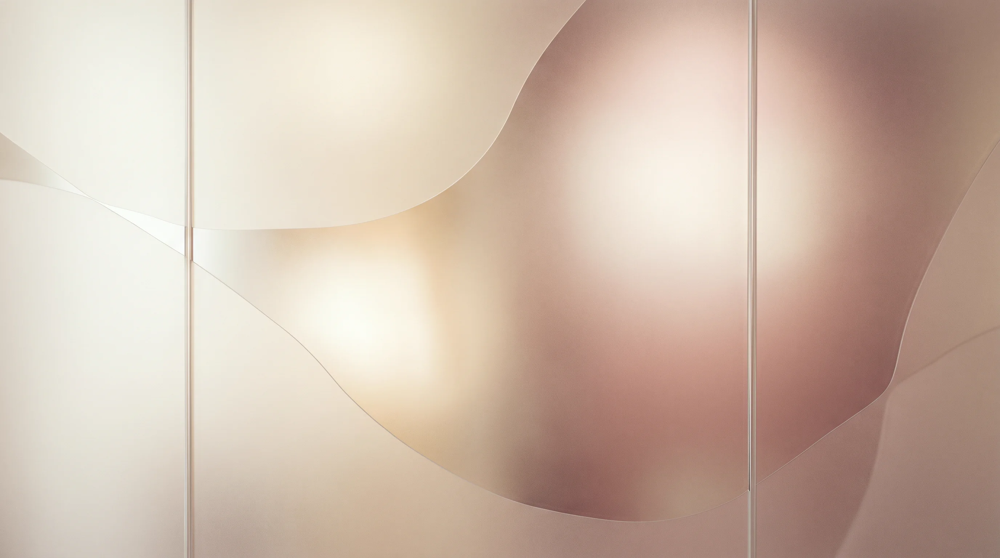
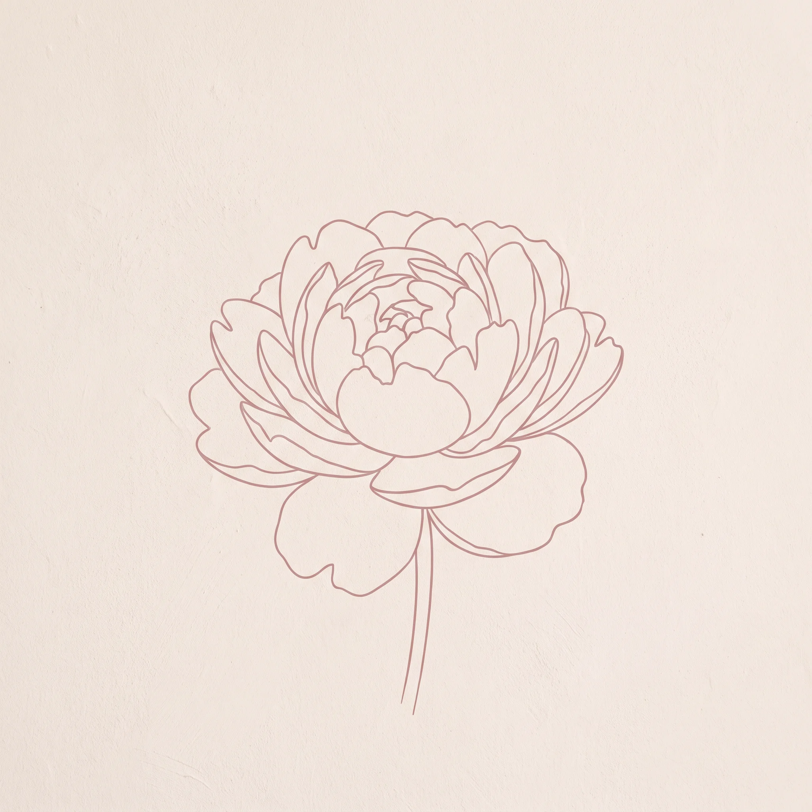
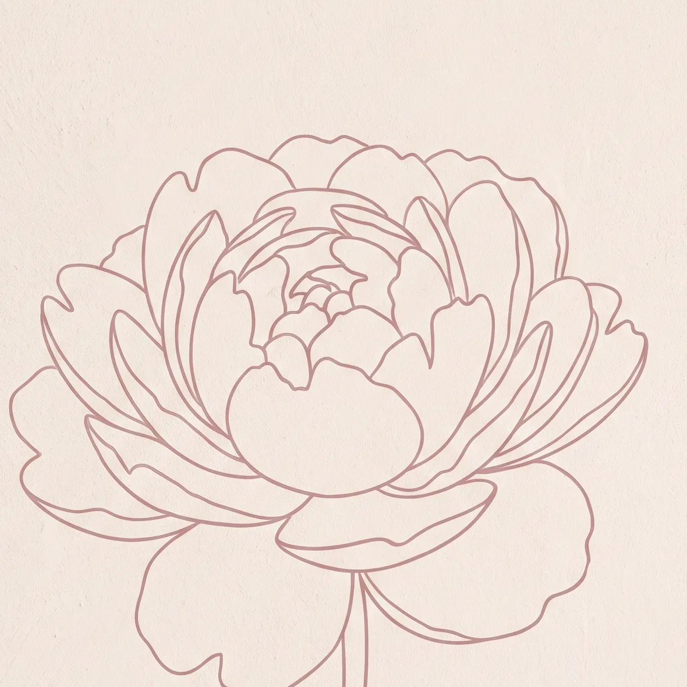
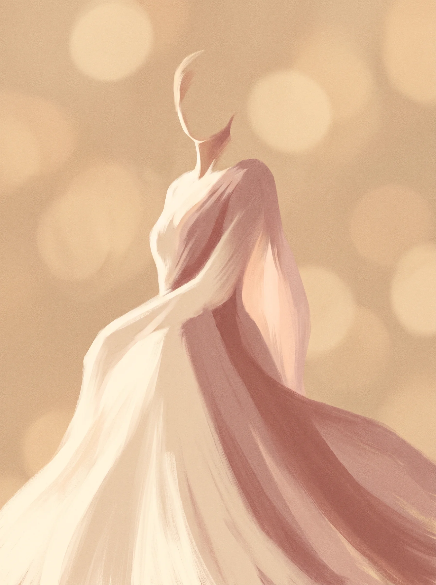

01
Estética Avançada
Protocolos com tecnologia de ponta para resultados naturais. Cada plano é desenhado depois da avaliação presencial, com indicação clara do que faz sentido e do que não faz.
Agendar

Referência em estética avançada no Centro Cívico de Curitiba, com nota 5,0 e 503 avaliações no Google. Harmonização facial, rejuvenescimento e protocolos sob medida, sempre a partir de uma avaliação individual.

Cada protocolo começa com avaliação individual. Danielle Bocchi e a equipe escolhem o caminho com base no seu rosto, no seu tempo e no que te incomoda, não no que está em moda.
Protocolos com tecnologia de ponta para resultados naturais. Cada plano é desenhado depois da avaliação presencial, com indicação clara do que faz sentido e do que não faz.
AgendarEquilíbrio e proporção respeitando a identidade do seu rosto. Avaliação criteriosa antes de qualquer procedimento, com explicação detalhada de cada etapa.
AgendarTratamentos que devolvem viço, firmeza e luminosidade. Plano sob medida para devolver ao rosto o que o tempo levou, com resultado progressivo e natural.
AgendarProtocolos para modelagem, drenagem e firmeza. Combinamos técnicas para entregar resultado visível, com sessões planejadas de acordo com a sua rotina.
AgendarLimpeza profunda, hidratação e cuidados específicos para cada tipo de pele. Manutenção que prolonga resultados e mantém a saúde da pele em dia.
AgendarCada uma dessas 503 avaliações começou com a mesma pergunta que talvez seja a sua: será que dá para confiar? Atendimento humano, técnica apurada e resultado que se mantém — é isso que sustenta a nota 5,0.

A Estética Danielle Bocchi é referência em estética avançada no Centro Cívico de Curitiba. Há quase duas décadas a clínica constrói reputação com técnica apurada, atendimento humano e um resultado consistente — hoje traduzido em 5,0 de nota e 503 avaliações no Google.
A primeira conversa é sempre de avaliação: histórico, expectativas, exame detalhado do que te incomoda. Só depois disso vem o plano, com explicação clara de cada etapa e do tempo que cada procedimento leva.
O atendimento é presencial, com hora marcada, em um consultório preparado para receber cada paciente com a atenção que o cuidado com a pele e com a estética exigem.
Sem cadastro, sem formulário longo, sem espera. A primeira conversa é direta, e a primeira visita serve para entender o que faz sentido no seu caso.
Mande uma mensagem contando o que te incomoda. A equipe responde em horário comercial com os horários disponíveis e tira a primeira dúvida antes de você se comprometer.
Conversa sobre histórico, expectativas e exame do caso. Avaliação cuidadosa, sem compromisso. Você sai com orientações claras já no primeiro dia.
Procedimentos definidos com base na sua avaliação, no seu tempo e no que faz sentido para o seu caso. Explicação detalhada de cada etapa antes de começar.
Retornos marcados para avaliar resultados, ajustar o que for preciso e garantir que o tratamento evolui como combinado. Cuidado que continua depois do procedimento.
Quatro pilares que orientam cada protocolo, cada consulta e cada retorno da clínica.
Cada protocolo começa com conversa sobre histórico, expectativas e exame individual. Você sai da primeira visita com um plano claro, mesmo que decida não seguir em frente.
Sem pacotes prontos. Cada combinação de procedimentos é desenhada para o caso específico da paciente, com explicação de por que cada etapa foi indicada.
Técnica apurada e produtos certificados para resultado que se mantém elegante. A estética avançada da clínica não trabalha com exageros, e sim com o que combina com você.
Retornos programados para acompanhar a evolução, ajustar o que for preciso e responder dúvidas que aparecem depois. Cuidado que não termina na última sessão.
A primeira consulta é de avaliação. Você conta o que te incomoda, a equipe examina o caso e sai com um plano detalhado, mesmo que decida não seguir com o procedimento. Não há compromisso nessa primeira conversa.
A maioria dos procedimentos causa desconforto leve e bem tolerado. Anestésico tópico ou local é usado sempre que indicado, e a equipe explica o que esperar de cada etapa antes de começar.
Varia por procedimento. A avaliação presencial é o momento de entender o seu caso e receber orientação clara sobre o que esperar nos dias seguintes, incluindo restrições e cuidados.
Sim. A clínica trabalha com formas de pagamento e parcelamento. Detalhes e opções são alinhados diretamente na conversa de WhatsApp ou na avaliação presencial.